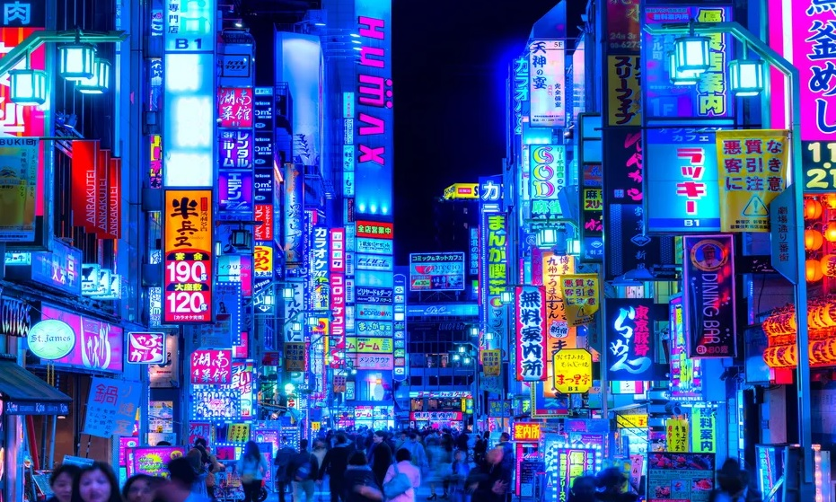
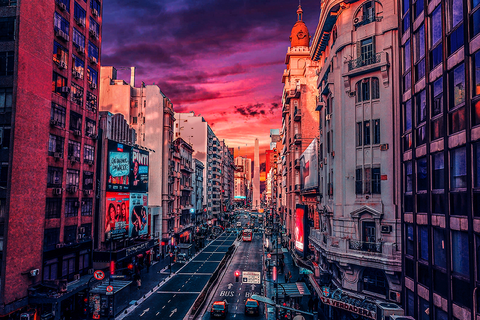
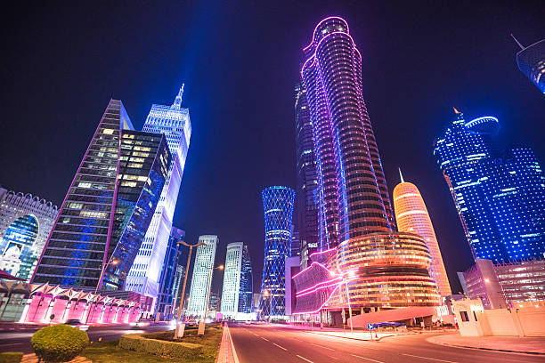
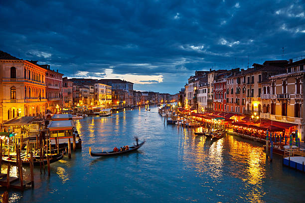
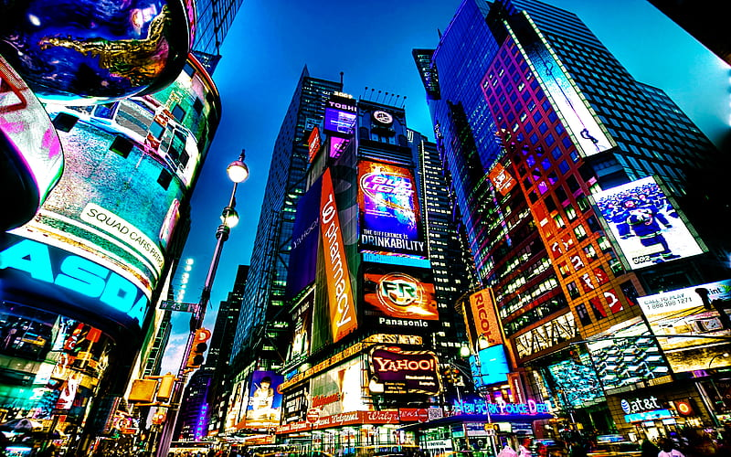

FRANCIA

La Torre Eiffel es el símbolo de París, fue construida para la Exposición Universal de París de 1889 y actualmente es el monumento más visitado del mundo.Museo del Louvre,Notre Dame,Arco del Triunfo Barrio Latino,Panteón,Montmartre y Los Inválidos.
JAPON
Japón cuenta con 19 sitios del patrimonio mundial, incluyendo el castillo de Himeji, los monumentos históricos de la antigua Kioto y Nara. Las atracciones turísticas más populares incluyen Tokio e Hiroshima, el Monte Fuji, estaciones de esquí como Niseko en Hokkaido, la isla de Okinawa.
ARGENTINA
Un paseo por el centro de Buenos Aires. Recorrido por Caminito y el Barrio de La Boca,Ir al Mercado de San Telmo Recoleta y su Cementerio, El Ateneo Grand Splendid, Paseo de la Historieta, Recorrer Palermo, Montar en el Tranvía Histórico.
QATAR
Recorrer Souq Waqif, un mercado de tradición Visitar la Corniche de Doha, un paseo marítimo de ensueño, Un safari imperdible por el desierto, El Centro Comercial Villaggio, un paseo veneciano Banana Island, una excursión relajante.
ITALIA
La Plaza de San Marcos, La Basílica de San Marcos, El Palacio Ducal de Venecia, El Puente de los Suspiros, El Puente de Rialto, El Gran Canal, Los Canales de Venecia, Librería Acqua Alta
ESTADOS UNIDOS
Statue of Liberty, Ciudad de Nueva York National Mall, Washington, D.C Letrero de Hollywood, Los Ángeles, California Ruta 66, Oklahoma Golden Gate Bridge, San Francisco, California Gateway Arch, St Space Needle, Seattle, Washington.